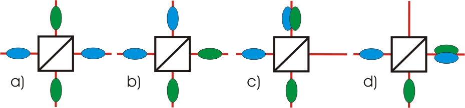
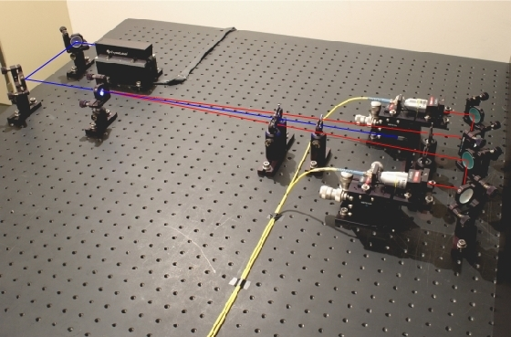

Hong-Ou-Mandel Interference Chapter 1:
Beam splitter and indistinguishability
In this chapter, we first discuss the possibilities of two single photons at the beam splitter. The Hong-Ou-Mandel phenomenon only occurs when both photons are absolutely indistinguishable. The importance of indistinguishability is explained further down below.
Possibilities at a beam splitter:
When two single quantum objects hit a symmetric beam splitter, there are four possible ways in which the quantum objects can leave the beam splitter (pic. 1). Either both quantum objects leave the beam splitter on two different paths (pics. 1 a, b) or both quantum objects leave the beam splitter on the same path (pics. 1 c, d). Each of these possibilities should be equiprobable.

pic. 1: Four possibilities how two different quantum objects can leave a symmetric beam splitter.
Indistinguishability of the two photons:
In order to detect the quantum phenomenon, both photons must be absolutely indistinguishable upon hitting the beam splitter. Two photons do, however, have a multitude of features which make them distinguishable: polarization, wave length and arrival time at the beam splitter.
Polarization:
To make sure that the two photons cannot be distinguished by polarization, both photons must have exactly the same polarization. The photons from the photon pair source are already polarized alike (vertically) and are transported to the real experiment via glass fibre cable. In normal glass fibre cables, however, the polarization is not retained, which is why special, polarization-retaining glass fibre cables are used. Both photons therefore are nearly equally polarized when hitting the beam splitter.Wave length:
So that photons cannot be distinguished by wave length, both photons must have exactly the same wave length. The photon pair source does, however, send out photon pairs which may have a wave length differing by up to ca. 80nm. For this reason, optical filters (band pass filter: 810±10nm) which transmit only photons of a certain wave length range (800-820nm) are placed in front of the coupling into the two glass fibre cables.Arrival time:
In order that both photons cannot be distinguished by the arrival time at the beam splitter cube, both photons must arrive there at exactly the same time. The arrival time is varied in the experiment by a relocatable path.
Source for two single photons:
In our experiments, single photons are used as quantum objects. We have divided the experiment into two sectors: single photon source and beam splitter cube. First, two single and separate photons must be generated. This is realized by the process of parametric fluorescence in a non-linear crystal (see basics and coincidences). Both photons leave the non-linear crystal at different angles and are coupled into the yellow glass fibre cable (pic. 2). With the aid of the glass fibre cable, the two single photons can be transported to the real experiment with the beam splitter. The experiment is carried out in the next chapter.

pic. 2: source for photon pairs: crystal (left) and fibre coupling (right)
To chapter 2: Conducting the experiment [klick]
Back to overview [klick]
Autor: P. Bronner, Juli 2008
Translation: G. Murphy